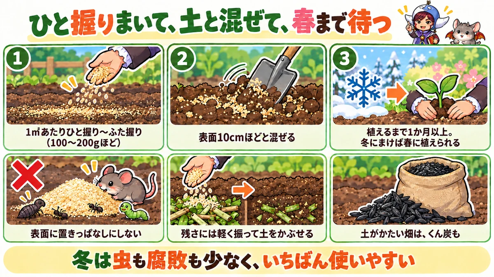

Rice bran in the vegetable garden 🌾 Raw and defatted bran, how much and when, and how not to get it wrong
🌾 "I've heard rice bran is good for the soil — how much do I use?"
🌾 "Can I plant straight after spreading it?"
🌾 "Won't it bring flies and mice?"
Hello, I'm Eiko. Eight years of growing vegetables organically and without pesticides, and a teaching licence in science.
In Japan, rice bran is everywhere: it's sold for pickling, and the coin-operated rice-polishing machines found by the roadside often leave it out for people to take. Used well, it's a cheap, easy and reliable soil improver. Used badly, it brings maggots and can damage young roots. If you can get rice bran where you live — from a rice mill, an Asian grocer or a farm supplier — this article is for you.
I'll cover the types of bran, what it does, winter soil building, speeding up compost, the year round, and the mistakes to avoid. Fermented bokashi made with bran is a separate topic (see making bokashi fertiliser); here it's about using bran as it is.
Types: raw bran (straight from polishing; oily, slower to break down, spoils easily); defatted bran (oil pressed out, sometimes pelleted; breaks down faster, keeps well); toasted bran (roasted to keep longer; sold for pickling).
How much: soil building — a handful or two per square metre (100–200 g, roughly 3–6 oz per square yard); on crop debris or leaves — a light dusting; with rice-hull charcoal — 50–100 g of charcoal per square metre.
When (central Japan): soil building — winter (December–February) is easiest, at least a month and ideally about three months before planting; crop debris — when you clear up after harvest; with soil solarisation — midsummer (July–August).
Watch out: don't sow or plant straight after; don't use too much at once; mix it into the soil — never leave a thick layer on top; don't leave it damp — use raw bran soon.
What this diagram says （図解の文字）
- Rice bran is a feast for microbes
- "Three types": "raw bran: easy to get lots, spoils easily" ／ "defatted bran: breaks down fast, keeps well" ／ "toasted bran: for pickling, keeps well"
- "Features": bars for "nitrogen", "phosphate", "potash" — "low in nitrogen, high in phosphate"
- "What it does": "microbes multiply" → "organic matter breaks down" → "the soil turns soft and crumbly"
- "Less a fertiliser than something that builds soil"
① What rice bran is
Rice bran is the powder from the outer layers and germ that are polished off brown rice to make white rice. The outside of the grain is where the nutrients are packed, so everything except the white part ends up in the bran.
Raw, defatted and toasted
- Raw bran: as it comes off the polisher. Fine, slightly moist and oily. Takes a little longer to break down; spoils if it absorbs damp.
- Defatted bran: raw bran with the oil pressed out. Common as a fertiliser, sometimes pelleted. Without the oil, water soaks in more easily, it breaks down faster and stores better.
- Toasted bran: raw bran roasted so it keeps; often sold for pickling.
All of them work for soil building. Think of the oil as changing how fast it breaks down and how easy it is to handle. If you're worried about pests or smell with raw bran, defatted or toasted bran is easier.
Where to get it
- Rice mills and polishing machines: some leave bran out to take, sometimes in large amounts for free
- Grocers: bran for pickling, in small packs
- Garden centres and farm suppliers: defatted bran sold as fertiliser
- Rice merchants: some will give you the bran from polishing
As a fertiliser
Rice bran contains nitrogen, phosphate and potash — typically quoted as about 2–3% nitrogen, 4–6% phosphate and 1–1.5% potash (products vary). Compared with other organic fertilisers, it's low in nitrogen and high in phosphate, the nutrient involved in flowering, fruiting and root growth. It also has minerals such as calcium and magnesium.
Because nitrogen is low, even a generous amount is unlikely to cause "too much" — lush leaves at the expense of everything else. But it isn't fast. Bran is broken down by microbes first, then taken up slowly.
Storing it
- Seal the bag and keep it somewhere cool and dry
- If you've collected a lot, use it soon
- For bran you won't use quickly, choose defatted or toasted
How it compares
- Oilseed cake: high in nitrogen; strong leaf growth. Slow, but too much is too much
- Chicken manure: nitrogen, phosphate and calcium; relatively quick. Overdo it and you risk scorching
- Compost and leaf mould: few nutrients; mainly loosen the soil itself
- Rice bran: low nitrogen, high phosphate, and a big effect as microbe food — somewhere between a fertiliser and compost
Think of bran less as feeding the vegetables directly and more as feeding the life in the soil, which builds the soil. That makes it hard to misuse.
② What it does
Food for microbes
Its main job is feeding soil microbes. Bran is full of the sugars, proteins and minerals they like, and they multiply on it. Think of a Japanese bran pickling bed: lactic acid bacteria feed on the bran and pickle the vegetables. In the garden, microbes multiply on bran in the same way.
Faster breakdown of organic matter
With more microbes, dead leaves, old roots and cut grass in the soil break down faster. That's why a dusting of bran speeds up a heap of crop debris or leaves.
Crumbly soil
As microbes break down organic matter, they produce glue-like substances that stick fine soil particles into small crumbs. Crumb-structured soil has plenty of pore space — it drains well and holds water, and roots run easily through it.
Slow and steady
The nutrients reach the plants only after microbes break the bran down, so it feeds gently and for a long time. Some growers dig it in as a base dressing more than a month before planting and need little top-dressing afterwards.
③ Use 1: winter soil building
Winter is easiest
In warm, damp weather, raw bran easily brings pests or goes rotten. In winter it's cold and drier, so those worries shrink. Spread in winter, it breaks down slowly and the soil is in good shape by spring. Use it on beds cleared after autumn crops, or where you'll plant summer vegetables.
How to spread it
- Clear away old roots and weeds.
- Scatter a handful or two per square metre (100–200 g) as evenly as you can.
- Mix it lightly into the surface with a hoe or spade. No need to dig deep — the top 4 in (10 cm) is enough.
- If it's dry, water lightly.
Left in a thick layer on top, it grows a thick mat of mould, draws insects, and invites birds and mice. Always mix it in.
Heavy soil: add rice-hull charcoal
On heavy or poorly drained soil, some growers spread rice-hull charcoal (rice husks charred at low temperature) with the bran. Its many tiny pores give microbes a home, so the microbes the bran feeds can work better. About 50–100 g per square metre. On very heavy soil, mixing in unburnt rice husks to open it up also works.
Crop debris: cover with soil
Where crop debris or dead weeds remain, chop them small, spread them, dust lightly with bran, and cover with a little soil. The soil keeps the debris from drying out so microbes can work, and stops the bran blowing away or attracting pests.
Daikon leaves in winter
Tough outer daikon leaves from the winter harvest can be laid between beds to wither and return to the soil. Winter is dry, so they rarely rot and draw pests the way they would in summer. A little bran speeds them up.
Leave time before planting
Raw bran sets off a rush of microbial activity. That can produce heat and gases; sow or plant into it and seeds may fail or roots be damaged. So leave a gap — at least a month, ideally about three. Spread in winter, plant in spring, and the gap takes care of itself.
When spring comes
- Pick up some soil and smell it. If it smells of earth and the bran has all but disappeared, it's broken down.
- If lumps remain or it smells rotten, give it longer, or dig it over well to let air in.
- Two to three weeks before planting, add compost or base fertiliser if needed and make up the beds.
- Let the beds settle a little before planting.
If the soil feels softer and moister than before winter, the bran has done its job.
Winter soil building without the heavy work
Winter soil work often means deep digging to turn the layers over, or digging in big clods to expose them to frost. Both help where soil is heavy, drains badly, or had a lot of disease or pests. But where soil already drains well and is soft, some growers simply scatter bran, mix it in shallowly and keep the microbes busy until spring. You don't need to dig every bed deeply every year — choose by the state of the soil.
With other materials
Bran often goes in with compost or leaf mould: those loosen the soil; bran feeds the microbes that break them down. If you're liming, do it on a different day from the bran.

What this diagram says （図解の文字）
- Scatter a handful, mix it in, wait until spring
- ① "A handful or two per m² (about 100–200 g)" ② "mix into the top 10 cm (4 in)" ③ "at least a month before planting — spread in winter, plant in spring"
- "Don't leave it lying on the surface" ／ "dust crop debris lightly and cover with soil" ／ "heavy soil: add rice-hull charcoal too"
- "In winter there are few pests and little rotting — the easiest time"
④ Use 2: speeding up crop debris and leaves
When you heap spent stems, leaves and roots in a corner, a light dusting of bran speeds things up. Bean and pea debris make good compost material.
- Chop debris small before heaping — big pieces leave gaps and take longer
- Dust with bran until the surface is just whitened
- If dry, water until moist
- Turn it now and then to let air in
A debris compost heap
- Choose a corner for the heap; an enclosure keeps it tidy.
- Spread chopped debris 8–12 in (20–30 cm) deep.
- Dust with bran until faintly white.
- Water until a squeezed handful just holds together.
- Repeat debris, bran and water in layers.
- Turn the whole heap about once every one to two months.
- It's done when the original materials are unrecognisable, dark, and smell of earth. Sieve before use and put unbroken pieces back on the heap.
Leave diseased plants and weeds that have set seed out of the heap.
Don't overdo it. Lots of bran to speed things up brings pests, or runs out of air and smells rotten. A faint dusting is enough.
Leaves too. When heaping autumn leaves for leaf mould, layer leaves and a little bran, and water to keep it moist.
⑤ Use 3: other uses
With summer soil solarisation
When covering soil with clear plastic in strong summer sun to cut down soil pests and weed seeds (soil solarisation), some mix in bran first. The idea is that the extra microbes help the soil heat up, and the soil is in better condition afterwards. Done in July–August as preparation for autumn crops.
An armyworm trap
Armyworms are said to be drawn to bran. Fill a paper cup with bran, bury it a little away from the plants with the rim level with the soil, and put a lid over the top. Check every few days and remove the caterpillars that have crawled in.
Bokashi
Bran is the main ingredient of bokashi (fertiliser made by fermenting organic materials). In winter, the airtight bag method — fermenting slowly without air — is low-effort and suits the season.
On paths
Some growers dust paths with bran on the idea that the microbes it feeds keep disease-causing fungi in check. How well that works is unclear, so keep it small if you try it.
As it is, or as bokashi?
- As it is: winter soil building, crop debris and leaves, when there's time before planting
- As bokashi: top-dressing, no time before planting, warm weather, containers
Bokashi is bran fermented in advance, so there's less heat, gas and pest trouble once it's in the ground. More work to make, but usable in more situations.
Rice-washing water
No bran nearby? The cloudy water from washing rice contains bran and starch, which feed microbes in the soil.
- On empty beds in winter, pour it on undiluted
- In place of watering, dilute 5–10 times
- In warm weather it easily brings pests, mould and smells — use it in the cold months
It has nothing like bran's nutrients, but it puts a kitchen by-product to use.
⑥ Using it as a top-dressing
Heaped raw bran at the base of growing plants can harm roots with heat and gas, and draw pests. If you use it as a top-dressing:
- Scatter a little in a ring a short way from the plant and mix it lightly into the surface
- Never a lot at once
- Or ferment it into bokashi first — already partly broken down, it's gentler on roots and acts faster
Winter feeding: crops that die back and rest in winter, such as asparagus and Chinese chives, benefit from fertiliser put round them in winter that comes into play when shoots grow in spring. Bran or bran bokashi, placed a little away from the crowns, suits this.
⑦ Avoiding trouble
Heat and gas
Breaking down bran gives off heat, and where there's little air, gases harmful to roots can form. Don't plant straight away, don't pile it thick, mix it well into the soil — keep to those three and the worry mostly goes.
Pests
Raw bran attracts pests. Left on the surface, it can draw fly maggots, fungus gnats and cutworms — especially in warm weather. Mix it in, use less when it's warm, and use it in winter.
A rotten smell
Bran left wet without air smells rotten — a sign it's going putrid, not fermenting well. Mix it to let air in, or add dry soil or leaves to soak up the water. On the other hand, fluffy white mould with a sweetish smell means it's breaking down well — nothing to worry about.
Measuring a handful
Everyone's handful is different, so weigh yours once on the kitchen scales. After that you can judge by eye without going far wrong. A square metre is 1 m by 1 m (about 3¼ ft square). Work out the area of your bed from its length and width and get the amount ready first — it stops you over-applying.
Mice and birds
Bran left on top draws mice and birds by its smell. Mix it into the soil and there's little to worry about.
Growth can slow while it breaks down
While bran is breaking down, the booming microbes use up nitrogen and other nutrients, so plants put in mid-breakdown may briefly run short and grow slowly. Another reason to leave a gap before planting.
What this diagram says （図解の文字）
- Keep to the amount, mix it in, wait
- "Good breakdown, bad breakdown": ◯ "white mould and a sweet smell = going well" ／ ✕ "rotten smell = too wet" ／ ✕ "don't plant straight away; don't heap it at the base of plants"
- "Through the year" (December to November): "Winter (Dec–Feb): the easiest time for soil building" ／ "Summer (Jul–Aug): mix in before solarisation; don't leave it on the surface in hot weather" ／ "Autumn (Sep–Nov): dust crop debris and leaves; armyworm trap"
- "Don't judge it after one year. The soil changes over 3–5 years"
⑧ Through the year (central Japan)
- December–February: spread on empty beds and mix in — the easiest time. Winter feeding for asparagus and chives. Make winter bokashi
- March–April: plant summer crops where you spread bran in winter. If spreading now, do it more than a month before planting
- May–June: it's warming up — use less raw bran. Dust crop debris to speed it up
- July–August: mix in before solarisation. Pests breed easily in the heat — don't leave it on the surface
- September–October: before planting autumn crops, use it only if you can leave the gap. Armyworm traps
- November: dust summer-crop debris and leaves for compost and leaf mould
⑨ Which crops it suits
- Crops that do best on modest feeding: because it's low in nitrogen and slow, some growers favour it for tomatoes, watermelons, carrots and daikon — crops that go leafy or bland on too much fertiliser
- Hungry crops: aubergines, cucumbers and leafy greens may not get enough from bran alone. Combine with compost and other organic fertilisers, or top-dress
- Potatoes: often grown on bran-improved soil — besides the softer soil, it's said to reduce common scab (rough, scabby patches on the skin). Spread and mix it in at least 2–3 weeks before planting; spring and autumn planting times can be warm, so mix it in at once and leave none on top
- Beans and peas: they manage on little fertiliser anyway. Use less
⑩ Taking the long view
In the first year, depending on where your soil started, growth may be a little slower or yields not as high as you hoped. Bran builds up the life in the soil gradually, so it takes time to show. Don't give up after a year: kept up every winter, the soil is said to change for the better over three to five years. Note the feel of the soil, how water soaks in, and how many earthworms you see each year — changes are easier to spot that way.
⑪ Where growers disagree, and common mistakes
Raw bran straight into the garden? Some say it's fine spread in winter and mixed in; others worry about pests, heat and slowed growth and always make bokashi first. In winter, in modest amounts, with a gap before planting, raw bran is easy to use. In warm weather, or with no time before planting, bokashi is safer.
How long before planting? Advice ranges from "about two weeks" to "a month or more" to "about three months." Breakdown is faster when warm and slower when cold. Spread in winter and plant in spring and you'll have about three months anyway — satisfying all of them.
Does it make vegetables taste better? Some say their crops tasted better or sweeter. Better soil and not over-feeding might affect flavour, but it's hard to prove.
Common mistakes:
- Planting straight after — heat and gas stop seeds coming up or damage roots. Leave a gap
- Thinking more is better — pests, rot, slowed growth. A handful or two per square metre
- Leaving it on top — thick mould, insects, mice and birds. Mix it in
- Raw bran in summer — pests and rot. Use less, or save it for winter
- Storing it damp in the bag — it spoils, smells and breeds pests. Keep it dry and use it soon
⑫ Questions people ask
Can I just take bran from a rice-polishing machine? Rules differ. Some say help yourself; some ask you not to. Read the notice, and ask whoever runs it if you're unsure.
Raw or defatted? Either works. For large amounts, raw bran from a mill; if pests or smell worry you, defatted or toasted. Choose by speed of breakdown and ease of handling.
Containers? Yes, but containers hold little soil and feel the heat and pests more, so use only a pinch. Mix it in when there's time before the next planting, and wait.
Can it replace lime? It contains calcium and other minerals, but it can't correct acidity the way lime does. For crops that dislike acid soil, test the pH and lime if needed (see lime and soil pH).
With bran in, do I need other fertiliser? For some crops, bran alone isn't enough — especially nitrogen-hungry ones. Make up the difference with other fertilisers or top-dressing.
Can I use an old pickling bed? Better not. Bran pickling beds are full of salt, and salt in the soil stops roots taking up water. Use only unsalted bran.
With rice-hull charcoal or compost? Yes — compost and leaf mould loosen the soil, charcoal houses microbes, bran feeds them. Their jobs differ, so they work well together. Just lime on a different day.
Does it break down in the cold? Slowly — and that's the beauty of winter use: little sudden heat or gas, few pests, and breakdown picks up as spring warms.
I've been given a lot. How do I store it? In thick bags, sealed, somewhere cool and dry out of the rain. If you can't use it soon, plan to put it all into winter soil building, debris compost or bokashi. Kept long into summer, it breeds pests.
Should I spread it before rain? Moderate moisture helps breakdown. In dry spells, water lightly after mixing it in, or spread it the day before rain. Before heavy rain, mix it in well or the surface bran may wash away.
Is it fine every year? It's low in nitrogen and unlikely to over-feed, but heavy use year after year can build up phosphate and other nutrients. Keep to the amounts and balance it with other materials; a simple soil test kit helps if you're unsure.
White mould appeared — is that OK? Fluffy white mould with a sweet smell means it's going well; mix it in and carry on. If it smells rotten, it's too wet — mix to let air in and add dry soil.
Science bit: four whys 🔬
Why do microbes multiply so fast? Most soil microbes have little food most of the time and lie low. Add bran — rich in sugars and protein, and a fine, easy-to-eat powder — and suddenly food is plentiful and they multiply rapidly. That's why bran is called a feast for microbes.
Why so much phosphate? A rice grain stores the nutrients for sprouting in its germ and outer layers. Phosphorus is one of them, concentrated there so the seed can use it when it germinates. Polishing removes exactly those layers and the germ, so they end up in the bran. The seed's savings for sprouting become nutrients for your soil.
Why does it heat up? Microbes use energy as they break down food, and some of it escapes as heat. When huge numbers break down lots of food at once, the heat adds up and the soil or heap warms — the same reason a compost heap steams when you dig into it. That heat is also what can damage the roots of anything planted straight away.
Why does air matter? Some microbes break things down using oxygen; others work without it. With plenty of air, breakdown is clean and low-smell. Pile bran thick or make it too wet and the air runs out; the oxygen-free microbes take over, producing rotten smells and gases harmful to roots. Mixing bran well into the soil and not over-wetting it is how you get air to it.
To sum up
- ✅ Rice bran is the powder from polishing rice; raw, defatted and toasted all work
- ✅ Low in nitrogen, high in phosphate: slow and hard to overdo
- ✅ Its main job is feeding soil microbes — the soil turns crumbly
- ✅ Easiest in winter: a handful or two per square metre, mixed into the surface
- ✅ Don't plant straight away — at least a month, ideally about three
- ✅ A light dusting speeds up crop debris and leaves
- ✅ Never heap raw bran at the base of plants; top-dress with bokashi, or a little, away from the plant
- ✅ Left on top or left damp, it brings pests and rot
- ✅ White mould and a sweet smell are good; a rotten smell means too wet
- ✅ Heavy soil: add rice-hull charcoal; chop debris, dust with bran, cover with soil
- ✅ Don't judge it after one year — the soil changes over 3–5 years
- ✅ Old pickling bran is salty — keep it out of the garden
Cheap and close at hand, rice bran slowly builds your soil if you use it well. The four things that matter: keep to the amount, mix it in, wait before planting, and keep it up for a few years. This winter, try a handful on one empty square metre and mix it in. When you dig it in spring, you'll feel the difference 🌾
Thank you for reading!